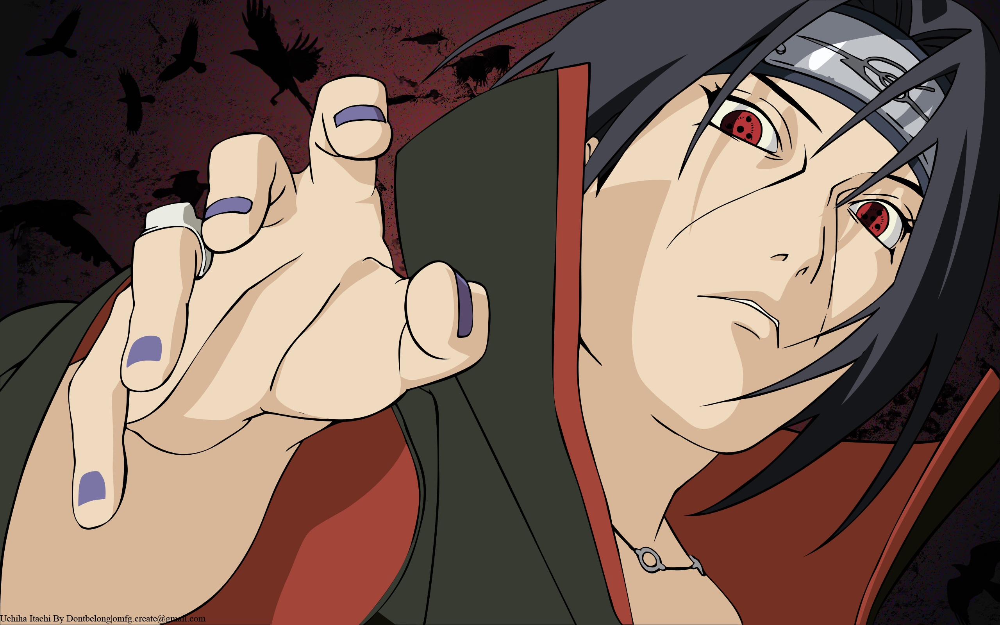
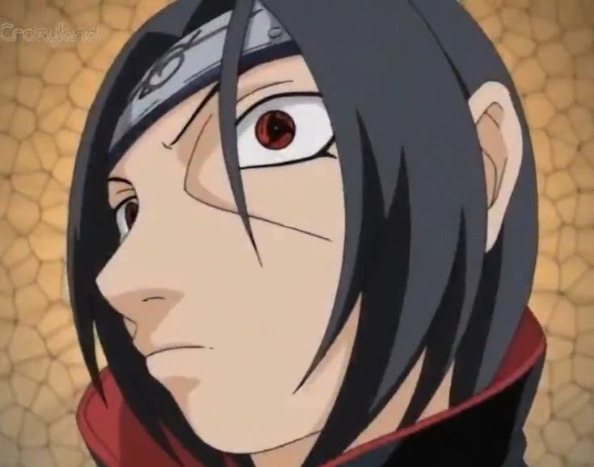
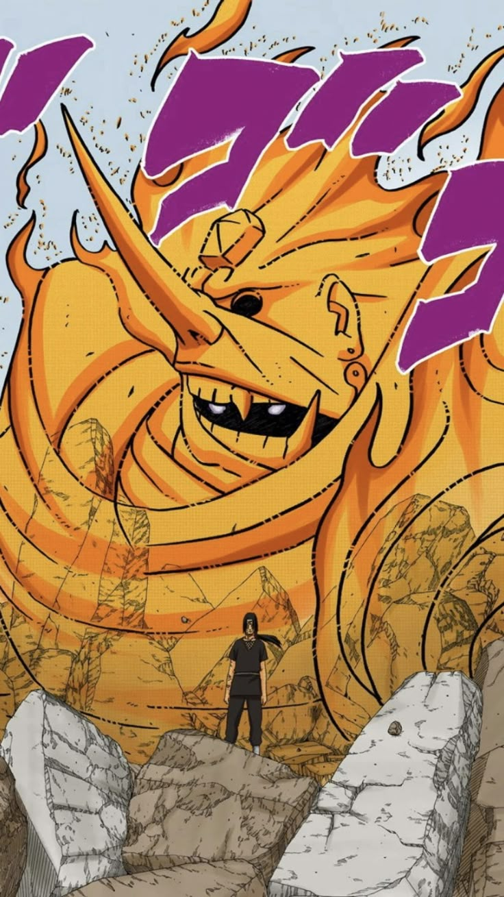

Inicio:
Itachi Uchiha (うちはイタチ, Uchiha Itachi) fue un prodigio del Clan Uchiha y miembro de Akatsuki. Llevaba el anillo "Escarlata" (朱, Shu) en el dedo anular izquierdo. Aunque era visto como un traidor por haber masacrado a su clan, en realidad era un espía que trabajaba en secreto para proteger a Konoha. Su compañero en Akatsuki fue Kisame Hoshigaki.
Historia:
Itachi nació en Konoha y fue un prodigio del Clan Uchiha. A una edad temprana, se vio obligado a tomar decisiones difíciles para proteger a su aldea. Tras la masacre del Clan Uchiha, Itachi se unió a Akatsuki para vigilar la organización desde dentro. Murió en batalla contra Sasuke, revelando su verdadero propósito y protegiendo a su hermano hasta el final.

Habilidades:
Las habilidades de Itachi se centraban en su Sharingan y Mangekyō Sharingan. Con estas dōjutsu, podía utilizar técnicas como el Tsukuyomi, una ilusión temporal que atormentaba a sus víctimas, y el Amaterasu, llamas negras que ardían hasta consumir todo a su paso. Su técnica más poderosa era el Susanoo, una entidad protectora equipada con la Espada de Totsuka, que sellaba a los enemigos, y el Escudo de Yata, que absorbía cualquier ataque.
